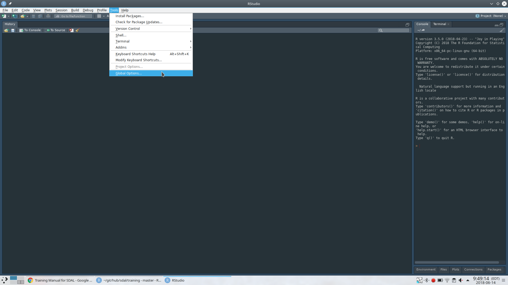
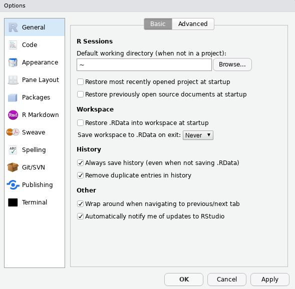

R
R is a programming language that is especially powerful for data exploration, visualization, and statistical analysis. To interact with R, we use RStudio.
RStudio IDE: https://www.rstudio.com/products/rstudio/download/preview/
Windows
Video Tutorial Install R by downloading and running this .exe file from CRAN. Also, please install the RStudio IDE. Note that if you have separate user and admin accounts, you should run the installers as administrator (right-click on .exe file and select “Run as administrator” instead of double-clicking). Otherwise problems may occur later, for example when installing R packages.
macOS
Video Tutorial Install R by downloading and running this .pkg file from CRAN. Also, please install the RStudio IDE.
Linux
You can download the binary files for your distribution from CRAN. Or you can use your package manager (e.g. for Debian/Ubuntu run sudo apt-get install r-base and for Fedora run sudo dnf install R). Also, please install the RStudio IDE.
Post installation settings
Open up global options
You can do this by going to Tools > Global Options on the top menu bar.

Setup startup defaults
Make sure:
- “Restore .RData into workspace at startup” box is unchecked
- “Save workspace to .RData on exit” is set to “Never”
It’s also advised to uncheck the top two options as well:
- Restore most recently opened project at startup
- Restore previously open source documents at startup
